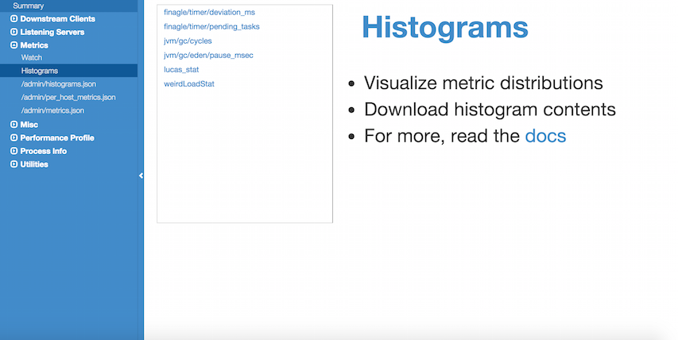

Features¶
We’ll walk through the features provided by TwitterServer by examining a slightly more advanced version of the example shown in the introduction.
import com.twitter.conversions.time._
import com.twitter.finagle.http.{HttpMuxer, Request, Response, Status}
import com.twitter.finagle.Service
import com.twitter.logging.Formatter
import com.twitter.server.TwitterServer
import com.twitter.util.{Await, Future, Time}
import java.net.InetSocketAddress
object AdvancedServer extends TwitterServer {
val what = flag("what", "hello", "String to return")
val addr = flag("bind", new InetSocketAddress(0), "Bind address")
val durations = flag("alarms", (1.second, 5.second), "2 alarm durations")
val counter = statsReceiver.counter("requests_counter")
override def failfastOnFlagsNotParsed: Boolean = true
val service = new Service[Request, Response] {
def apply(request: Request) = {
debug("Received a request at " + Time.now)
counter.incr()
val response = Response(request.version, Status.Ok)
response.contentString = what() + "\n"
Future.value(response)
}
}
def main() {
// We could create a new http server but in this case we use the
// one already started for /admin/* endpoints.
// The `TwitterServer` trait exposes an `adminHttpServer` that serve all routes
// registered in the HttpMuxer object, we just have to add our own.
HttpMuxer.addHandler("/echo", service)
HttpMuxer.addHandler("/echo/", service)
// And wait on the server
Await.ready(adminHttpServer)
}
}
Flags¶
The flags implementation, found in Twitter’s util library, focuses on simplicity and type safety, parsing flags into Scala values.
You define your flag like this, in that case the flag type is String:
val what = flag("what", "hello", "String to return")
But you can also define flags of composite type:
val addr = flag("bind", new InetSocketAddress(0), "Bind address")
val durations = flag("alarms", (1.second, 5.second), "2 alarm durations")
We also provide an automatic help entry that displays information about all the flags defined.
$ java -jar target/myserver-1.0.0-SNAPSHOT.jar -help
AdvancedServer
-alarm_durations='1.seconds,5.seconds': 2 alarm durations
-help='false': Show this help
-admin.port=':9990': Admin http server port
-bind=':0': Network interface to use
-what='hello': String to return
Note that you cannot read flags until after the arguments have been parsed, which happens before premains have been executed, but after the constructor and the inits. Similarly, you should only declare a flag in the constructor, before the arguments have been parsed.
As a precaution, we recommend turning on the failfastOnFlagsNotParsed option within your server. Having this option turned on means that if a Flag is attempted to be accessed before the flag has been parsed, then an IllegalStateException will be thrown.
override def failfastOnFlagsNotParsed: Boolean = true
Logging¶
TwitterServer uses the Simple Logging Facade for Java (SLF4J) for framework logging.
From the SLF4J documentation
“The Simple Logging Facade for Java serves as a simple facade or abstraction for various logging frameworks, such as java.util.logging, Logback and log4j. SLF4J allows the end-user to plug in the desired logging framework at deployment time.”
As such, in order to log with TwitterServer you must depend on an actual logging implementation.
Tip
Logback is a native slf4j-api implementation and is the recommended logging implementation for TwitterServer.
Since TwitterServer uses the slf4j-api for logging it no
longer provides the util-logging Logging logging implementation directly. As such, logging
configuration is handled on the choosen imlpementation and by default not through flags – except
in the case of choosing the slf4j-jdk14 logging implementation.
See the Backwards Compatibility section.
Backwards Compatibility (via slf4j-jdk14)¶
import com.twitter.conversions.time._
import com.twitter.finagle.http.{Request, Response, Status}
import com.twitter.finagle.Service
import com.twitter.server.TwitterServer
import com.twitter.server.logging.{Logging => JDK14Logging}
import com.twitter.util.{Await, Future, Time}
import java.net.InetSocketAddress
object BackwardsCompatServer extends TwitterServer with JDK14Logging {
override def defaultFormatter = new Formatter(
timezone = Some("UTC"),
prefix = "<yyyy-MM-dd HH:mm:ss.SSS> [%.3s] %s: "
)
val service = new Service[Request, Response] {
def apply(request: Request) = {
log.debug("Received a request at " + Time.now)
val response = Response(request.version, Status.Ok)
response.contentString = what() + "\n"
Future.value(response)
}
}
def main() {
...
}
}
To continue using TwitterServer with no changes to your logging, simply depend on the
slf4j-jdk14 library which will use slf4j-jdk14 as the slf4j logging
implementation, then mix in the com.twitter.server.logging.Logging trait to your TwitterServer.
Example:
object BackwardsCompatServer extends TwitterServer with JDK14Logging {
In the above example, the com.twitter.server.logging.Logging trait has been renamed to JDK14Logging
for clarity.
The com.twitter.server.logging.Logging trait provides a logger named log which can be configured via
the command line flags: -log.level and -log.output.
log.debug("Received a request at " + Time.now)
See: c.t.logging.Logging for more details on what flags can be used for configuring JUL loggers.
Log Format¶
To change the format of the log output, a custom Formatter is needed.
This is best done by overriding the defaultFormatter provided by the
com.twitter.server.logging.Logging trait.
override def defaultFormatter = new Formatter(
timezone = Some("UTC"),
prefix = "<yyyy-MM-dd HH:mm:ss.SSS> [%.3s] %s: "
)
Note
For more complicated logging schemes, you can extend the com.twitter.server.logging.Logging trait
and mix it back into a TwitterServer.
Dynamically Change Log Levels¶
Per-logger log levels can be changed on-the-fly via a logging handler on the admin interface for supported slf4j logging implementations. Instead of depending on an slf4j logging implementation directly, depend on the TwitterServer wrapper for the logging implementation which will provide the appropriate logging handler.
Supported implementations:
| Implementation | Dependency |
|---|---|
| java.util.logging (JUL) | |twitter-server/slf4j-jdk14|_ |
| Log4j | |twitter-server/slf4j-log4j12|_ |
| Logback (recommended) | |twitter-server/logback-classic|_ |
Metrics¶
Note: In order to enable usage of the Metrics library, you must have the finagle-stats jar on your classpath. Before version 6.39.0, finagle-stats depended on libraries which can be found in the https://maven.twttr.com repository.
The statsReceiver field of TwitterServer defines a sink for metrics. With it you can update counters and stats (histograms) or define gauges (instantaneous values).
For instance, you define your stats:
val counter = statsReceiver.counter("requests_counter")
And update the value:
counter.incr()
The value of this counter will be exported by the HTTP server and accessible at /admin/metrics.json. To see an example of the counter incrementing run the following:
$ curl -s localhost:9990/admin/metrics.json | jq '.requests_counter'
0
$ curl -s localhost:9990/echo
hello
$ curl -s localhost:9990/admin/metrics.json | jq '.requests_counter'
1
One thing to note is that histograms are windowed, so stats may disappear after a minute. We window histograms so that we have a consistent amount of data each time we read the histograms, so that each request has a similar impact on the statistics.
If we didn’t window histograms, the early requests would have a big influence on the computed statistics, and as the application continued to run, each request would have progressively less and less of an impact.
Metrics can be too expensive to store. By passing a comma-separated list of regexes to exclude from stats using -com.twitter.finagle.stats.statsFilter flag, one can single out the stats that will not be shown when queried with filtered=true. In other words, you can still access all of the stats normally, but this adds the option to fetch the filtered list.
For example, to filter out all stats starting with jvm and also any p90 stats, one can pass the following to TwitterServer:
-com.twitter.finagle.stats.statsFilter="jvm.*,.*\.p90"
To query the reduced list:
/admin/metrics.json?filtered=true
Note that this only works with finagle-stats and doesn’t work with finagle-ostrich4.
By default, TwitterServer doesn’t export debug metrics (assuming finagle-stats is used as a metrics library). Override the com.twitter.finagle.stats.verbose tunable (a comma-separated list of glob expressions under toggle map finagle) to whitelist debug metrics, potentially without application restart.
For example, the following JSON file placed in the resource folder (restart required) as com/twitter/tunables/finagle/instances.json will whitelist Netty 4 metrics for a given JVM process.
{
"tunables":
[
{
"id" : "com.twitter.finagle.stats.verbose",
"value" : "finagle/netty4*",
"type" : "java.lang.String"
}
]
}
If you would like a pretty version of the json output, add the parameter pretty=true or pretty=1, eg /admin/metrics.json?pretty=true
{
"requests_counter": 234,
"finagle/closes": 575,
"finagle/connection_duration.avg": 561,
"finagle/connection_duration.count": 592,
"finagle/connection_duration.max": 299986,
"finagle/connection_duration.min": 3,
"finagle/connection_duration.p50": 31,
"finagle/connection_duration.p95": 120,
"finagle/connection_duration.p99": 197,
"finagle/connection_duration.p9990": 2038,
"finagle/connection_duration.p9999": 2038,
"finagle/connection_duration.sum": 332690,
"finagle/connections": 2,
"finagle/http/failfast/unhealthy_for_ms": 0,
"finagle/http/failfast/unhealthy_num_tries": 0,
"finagle/success": 0
...
}
Exported Metrics¶
See the Finagle user guide for a comprehensive catalog of the metrics that are exported by Finagle.
Histograms¶
TwitterServer exports histogram-style metrics from your service, which typically represent a quality of a common event. These events might include queries (how wide is my query?), requests (how long did my request take?), retries (how many retries did I have), etc. Visualizing these histograms can help us better understand the different classes of events that can happen. For example, maybe you think some of your requests are slow because your garbage collection pauses are too long. You might compare latency histograms from before and after increasing your heap size to check whether you were right. Assessing this is much harder with only the standard statistics (p50, p90, etc), but with the full PDF, you can see the bad mode flatten out.
As with Metrics, in order to work with histograms you must have the finagle-stats jar on your classpath.
The following parameters control how a histogram is displayed.
- “h”: the name of the histogram you want to see.
- “fmt”: the desired format: raw | pdf | cdf | plot_pdf | plot_cdf
- “log_scale”: the scale used for the x-axis: true | false
For visualization, we provide both PDF and CDF options. A PDF is a probability density function, which is a plot from the value of the histogram to the proportion of events that had that value. It’s useful for seeing the different modes of a distribution, which typically represent different classes of events. A CDF is a cumulative distribution function, which is a plot from the value of the histogram to the proportion of events that had that value OR had less than that value. This effectively does smoothing, in case there aren’t very many samples.
The plot_* formats are rendered in a chart UI, while other formats export the histograms buckets. A histogram bucket consists of a lower and upper limit and a count. Any value falling inside a bucket’s limits is treated the same and adds 1 to the count.
Here’s an example where we query histogram counts for request latency. Each bucket is mapped to the number of requests which had a latency less than or equal to the bucket’s upper limit.
$ curl http://a.twitter.server/admin/histograms?h=clnt/p2cslowservertest-server/request_latency_ms&fmt=raw
{
"lowerLimit" : 5,
"upperLimit" : 6,
"count" : 28
},
{
"lowerLimit" : 6,
"upperLimit" : 7,
"count" : 9188
},
{
"lowerLimit" : 7,
"upperLimit" : 8,
"count" : 25164
}
Here’s an example where we query a cumulative distribution function (CDF). Each bucket is mapped to a percentage of requests which had a latency less than or equal to the bucket’s upper limit.
$ curl http://a.twitter.server/admin/histograms?h=clnt/p2cslowservertest-server/request_latency_ms&fmt=cdf
{
"lowerLimit" : 5,
"upperLimit" : 6,
"percentage" : 6.444885E-5
},
{
"lowerLimit" : 6,
"upperLimit" : 7,
"percentage" : 0.03286891
},
{
"lowerLimit" : 7,
"upperLimit" : 8,
"percentage" : 0.15292539
},
{
"lowerLimit" : 8,
"upperLimit" : 9,
"percentage" : 0.26998794
},
{
"lowerLimit" : 9,
"upperLimit" : 10,
"percentage" : 0.41753477
}
Plotting the “finagle/timer/deviation_ms” cumulative distribution function:
$ chrome http://a.twitter.server/admin/histograms?h=clnt/p2cslowservertest-server/request_latency_ms&fmt=plot_cdf

While plotting graphs of your metrics, you can switch between formats using the buttons. Log scale is typically good for looking at high percentiles.
Histograms are normally only available for services that use a MetricsStatsReceiver (default), but it is also possible to provide a custom one. A custom StatsReceiver must implement the WithHistogramDetails trait, and it should be service-loaded.
Admin HTTP interface¶
TwitterServer provides an HTTP server and includes a variety of tools for diagnostics, profiling, and more. The details are covered in-depth here.
Lifecycle Management¶
TwitterServer exposes endpoints to manage server lifecycle that are compatible with Mesos’s job manager:
- /abortabortabort
- Abort the process.
- /health
- By default, respond with content-body “OK”. This endpoint can be managed manually by mixing in the Lifecycle.Warmup trait with your server.
- /quitquitquit
- Quit the process.
These entries are the default, but if you need you can add your own handler to this HTTP server:
HttpMuxer.addHandler("/echo", service)
HttpMuxer.addHandler("/echo/", service)
Extension¶
TwitterServer can be extended modularly by mixing in more traits. If you want to alter the behavior of a trait that is already mixed into TwitterServer, you can override methods that you want to have different behavior and then mix it in again. For example, in the Logging trait, you can override loggers to change where you send logs.
If you want finer grained control over your server, you can remix traits however you like in the same way that the TwitterServer trait is built.